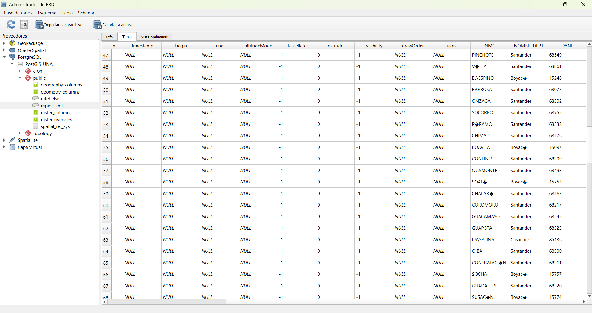
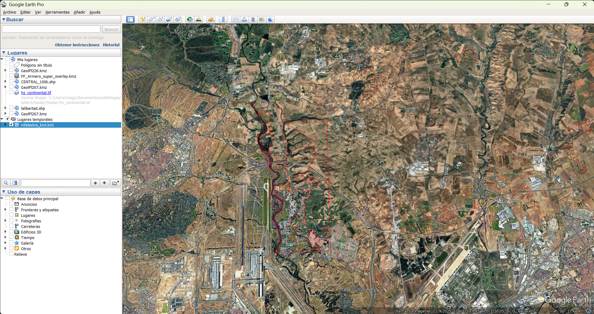
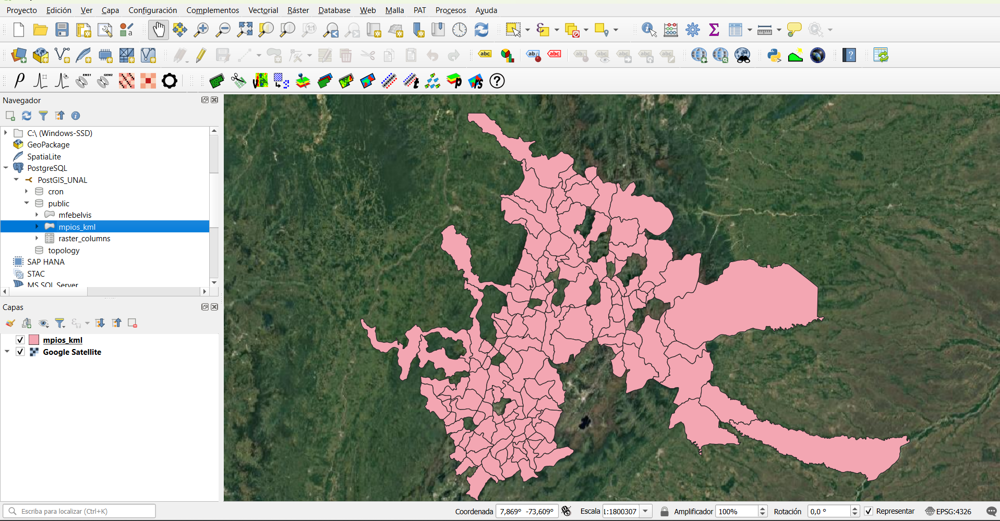

Evaluación Final – Conversión de Formatos e Interoperabilidad
1 Introducción
El presente informe documenta el flujo técnico desarrollado en los ejercicios de conversión de formatos espaciales y procesos ETL (Extract–Transform–Load). Se demuestra la capacidad de transformar datos entre modelos ráster y vector, exportar información para visualización web y cargar datos filtrados en una base de datos PostgreSQL/PostGIS.
2 Ejercicio 1 – Sistemas de Coordenadas y KML
2.1 ¿Por qué es un error abrir un KML con coordenadas planas en Google Earth?
El formato KML (Keyhole Markup Language) está diseñado exclusivamente para trabajar en coordenadas geográficas bajo el sistema WGS84 (EPSG:4326). Google Earth interpreta los datos asumiendo que las coordenadas están expresadas en latitud y longitud (grados).
Si un archivo es exportado en coordenadas planas (por ejemplo UTM en metros) y se intenta abrir directamente en Google Earth, las geometrías aparecerán desplazadas o completamente fuera del globo terrestre. Esto ocurre porque el visor no realiza transformación automática del sistema de referencia.
Se afirma que Google Earth no tiene “proyección al vuelo” porque no reproyecta dinámicamente capas en distintos CRS; exige que el archivo esté previamente transformado a coordenadas geográficas WGS84 antes de su visualización.
3 Ejercicio 2 – ETL Espacial y Carga en PostGIS
3.1 Descripción del proceso ETL
El flujo desarrollado siguió la lógica Extract – Transform – Load (ETL), aplicando reglas explícitas en cada etapa.
3.2 Extract
Se utilizaron como fuentes de datos:
- MUNICIPIOS_ISLA_WGS84.shp
- coordenadas.kml
Ambos archivos fueron cargados en QGIS y verificados en el sistema de referencia WGS84 (EPSG:4326).
3.3 Transform
La fase de transformación incluyó dos filtros aplicados en orden lógico para optimizar el procesamiento.
3.3.1 1. Filtro por atributo (Selección por Expresión)
Se excluyeron municipios con nombres compuestos (que contienen espacios en el campo NMG).
La expresión SQL utilizada en QGIS fue:
NOT "NMG" LIKE '% %'Esta instrucción selecciona únicamente los registros cuyo nombre no contiene espacios, reduciendo el conjunto de datos antes del análisis espacial.
3.3.2 2. Filtro espacial (Buffer + Selección por Ubicación)
Dado que el cálculo de distancias requiere unidades métricas, los puntos del archivo coordenadas.kml fueron reproyectados previamente a un sistema UTM correspondiente.
Se generó un buffer de 40 km mediante la herramienta Buffer con los siguientes parámetros:
Distancia: 40000 metros
Dissolve: Activado
Segmentos: 20
Posteriormente se aplicó la herramienta Seleccionar por ubicación utilizando el predicado espacial:
Seleccionar entidades que INTERSECTAN el buffer_40km
Este procedimiento permitió identificar únicamente los municipios ubicados dentro del radio de influencia definido.
3.4 Justificación del orden de los filtros
Se aplicó primero el filtro por atributo debido a que las comparaciones alfanuméricas son operaciones computacionalmente ligeras. Esto reduce el número de entidades en memoria antes de ejecutar operaciones espaciales, las cuales implican cálculos geométricos y evaluación topológica más costosa en términos de procesamiento.
Al disminuir previamente el volumen de datos, se optimiza el uso de memoria y se mejora la eficiencia global del flujo ETL.
3.5 Load
Las entidades resultantes fueron exportadas e importadas en PostgreSQL/PostGIS mediante el DB Manager de QGIS con la siguiente configuración:
Base de datos: sig_db_unal
Esquema: public
Nombre de tabla: mpios_kml
De esta manera, el conjunto final almacenado en la base de datos cumple simultáneamente con las reglas de negocio alfanuméricas y espaciales definidas.
4 Verificación de carga en PostGIS
La Figura siguiente muestra la tabla espacial mpios_kml almacenada en el esquema public de la base de datos PostgreSQL/PostGIS, visualizada desde el DB Manager de QGIS.

En la imagen se observa que los registros cumplen con las condiciones establecidas: ausencia de nombres compuestos y localización dentro del buffer de 40 km.
5 Visualización en Google Earth
La siguiente figura muestra la correcta visualización del archivo KML exportado desde QGIS y cargado en Google Earth.

Se observa que las geometrías se representan correctamente sobre el globo terrestre, confirmando que el archivo fue exportado en coordenadas geográficas WGS84 (EPSG:4326).
6 Previsualización gráfica en PostGIS
La siguiente figura muestra la capa mpios_kml cargada desde PostgreSQL/PostGIS y visualizada en QGIS.

La visualización confirma que los registros almacenados en la base de datos mantienen integridad geométrica y cumplen las reglas de filtrado definidas en el proceso ETL.
7 Reflexión sobre Interoperabilidad
El desarrollo del ejercicio demostró la capacidad de QGIS para actuar como herramienta integral dentro de un flujo profesional de datos espaciales.
QGIS permitió:
- Transformar sistemas de referencia.
- Aplicar filtros alfanuméricos y espaciales.
- Generar buffers métricos con precisión.
- Conectarse directamente a PostgreSQL/PostGIS.
- Crear tablas espaciales en el esquema public sin configuraciones adicionales complejas.
La interoperabilidad se evidenció en la transición entre formatos como Shapefile, KML y base de datos PostGIS, manteniendo consistencia geométrica y estructural.
El uso exclusivo de software de código abierto demuestra que es posible implementar flujos ETL espaciales profesionales sin depender de licencias comerciales, garantizando compatibilidad con estándares abiertos (OGC) y facilitando la portabilidad de los datos.
8 Conclusión
El desarrollo de este taller permitió comprender:
- La importancia de la correcta gestión de sistemas de coordenadas para interoperabilidad web.
- La transición estructural entre modelos ráster y vector.
- La eficiencia computacional en procesos ETL espaciales.
- Las diferencias operativas entre plataformas SIG comerciales y de código abierto.
Estos conocimientos son fundamentales en entornos profesionales donde la movilidad segura y eficiente de datos espaciales entre sistemas es una necesidad constante.